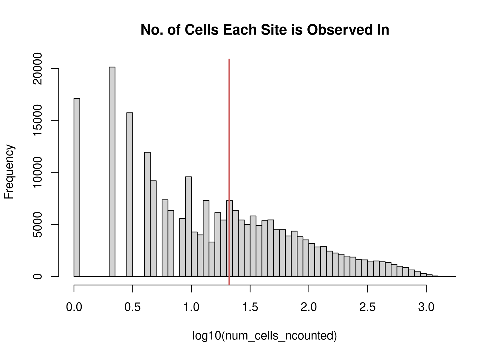

Process data for Buenrostro 2018 scATAC-seq dataset
Kaixuan Luo
Last updated: 2020-11-18
Checks: 7 0
Knit directory: scATACseq-topics/
This reproducible R Markdown analysis was created with workflowr (version 1.6.2). The Checks tab describes the reproducibility checks that were applied when the results were created. The Past versions tab lists the development history.
Great! Since the R Markdown file has been committed to the Git repository, you know the exact version of the code that produced these results.
Great job! The global environment was empty. Objects defined in the global environment can affect the analysis in your R Markdown file in unknown ways. For reproduciblity it’s best to always run the code in an empty environment.
The command set.seed(20200729) was run prior to running the code in the R Markdown file. Setting a seed ensures that any results that rely on randomness, e.g. subsampling or permutations, are reproducible.
Great job! Recording the operating system, R version, and package versions is critical for reproducibility.
Nice! There were no cached chunks for this analysis, so you can be confident that you successfully produced the results during this run.
Great job! Using relative paths to the files within your workflowr project makes it easier to run your code on other machines.
Great! You are using Git for version control. Tracking code development and connecting the code version to the results is critical for reproducibility.
The results in this page were generated with repository version ee608fd. See the Past versions tab to see a history of the changes made to the R Markdown and HTML files.
Note that you need to be careful to ensure that all relevant files for the analysis have been committed to Git prior to generating the results (you can use wflow_publish or wflow_git_commit). workflowr only checks the R Markdown file, but you know if there are other scripts or data files that it depends on. Below is the status of the Git repository when the results were generated:
Ignored files:
Ignored: .Rhistory
Ignored: .Rproj.user/
Untracked files:
Untracked: analysis/clusters_pca_structure_Cusanovich2018.Rmd
Untracked: analysis/process_data_Buenrostro2018_Chen2019.Rmd
Untracked: buenrostro2018.RData
Unstaged changes:
Modified: analysis/plots_Lareau2019_bonemarrow.Rmd
Modified: scripts/fit_all_models_Buenrostro_2018.sbatch
Note that any generated files, e.g. HTML, png, CSS, etc., are not included in this status report because it is ok for generated content to have uncommitted changes.
These are the previous versions of the repository in which changes were made to the R Markdown (analysis/process_data_Buenrostro2018.Rmd) and HTML (docs/process_data_Buenrostro2018.html) files. If you’ve configured a remote Git repository (see ?wflow_git_remote), click on the hyperlinks in the table below to view the files as they were in that past version.
| File | Version | Author | Date | Message |
|---|---|---|---|---|
| Rmd | ee608fd | kevinlkx | 2020-11-18 | process counts for aggregated single-cell peaks using chromVAR |
| html | 594fd86 | kevinlkx | 2020-11-10 | Build site. |
| Rmd | 614814b | kevinlkx | 2020-11-10 | process Buenrostro2018 data using Downloaded scATAC-seq processed data from GEO |
| Rmd | c113844 | kevinlkx | 2020-11-10 | wflow_rename(“analysis/process_data_Buenrostro2018.Rmd”, “analysis/process_data_Buenrostro2018_Chen2019pipeline.Rmd”) |
| html | c113844 | kevinlkx | 2020-11-10 | wflow_rename(“analysis/process_data_Buenrostro2018.Rmd”, “analysis/process_data_Buenrostro2018_Chen2019pipeline.Rmd”) |
| html | 1905c58 | kevinlkx | 2020-11-05 | Build site. |
| Rmd | 1da32f8 | kevinlkx | 2020-11-05 | set binarized counts as sparse matrix |
| html | 89b45be | kevinlkx | 2020-11-04 | Build site. |
| Rmd | 857e1e8 | kevinlkx | 2020-11-04 | process data from Buenrostro 2018 paper |
| html | 907fa65 | kevinlkx | 2020-11-04 | Build site. |
| Rmd | 12bf4b3 | kevinlkx | 2020-11-04 | process data from Buenrostro 2018 paper |
About Buenrostro 2018 dataset
Reference: Buenrostro, J. D. et al. Integrated Single-Cell Analysis Maps the Continuous Regulatory Landscape of Human Hematopoietic Differentiation. Cell 173, 1535–1548.e16 (2018).
Data were downloaded from GEO: GSE96772
RCC directory: /project2/mstephens/kevinluo/scATACseq-topics/data/Buenrostro_2018/
Prepare data for topic modeling
Using peaks called from bulk ATAC-seq samples
The Buenrostro et al paper called ATAC-seq peaks from the bulk ATAC-seq samples. Downloaded scATAC-seq processed data from GEO: GSE96769
- Peaks called from bulk ATAC-seq samples
GSE96769_PeakFile_20160207.bed.gz - scATAC-seq sparse count matrix
GSE96769_scATACseq_counts.txt.gz
library(Matrix)
library(tools)
library(readr)
library(data.table)Load the fragment counts as a 2,953 x 491,437 sparse matrix.
# The first row has the sample names
file_counts <- "/project2/mstephens/kevinluo/scATACseq-topics/data/Buenrostro_2018/GEO_data/GSE96769_scATACseq_counts.txt.gz"
sample_names <- readLines(file_counts,n = 1)
sample_names <- unlist(strsplit(sample_names,"\t",fixed = TRUE))
sample_names <- unlist(strsplit(sample_names,";",fixed = TRUE))
sample_names <- sample_names[-1]
# Load the fragment counts as sparse matrix.
dat <- fread(file_counts,sep = "\t",skip = 1)
class(dat) <- "data.frame"
names(dat) <- c("i","j","x")
counts <- sparseMatrix(i = dat$i,j = dat$j,x = dat$x)
counts <- t(counts)
rownames(counts) <- sample_names
dim(counts)[1] 2953 491437peaks
peaks <- fread("/project2/mstephens/kevinluo/scATACseq-topics/data/Buenrostro_2018/GEO_data/GSE96769_PeakFile_20160207.bed.gz")
peak_names <- paste(peaks$V1,peaks$V2,peaks$V3,sep = "_")
rownames(peaks) <- peak_names
cat(sprintf("Number of peaks: %d\n",nrow(peaks)))Number of peaks: 491437colnames(counts) <- peak_namesPlot the distribution of fragment counts.
y <- table(summary(counts)$x)
x <- names(y)
y <- as.numeric(y)
plot(x,y,pch = 20,log = "y",cex = 0.65,
xlab = "number of fragments mapping to peak",
ylab = "number of peaks")
lines(x,y)
| Version | Author | Date |
|---|---|---|
| 594fd86 | kevinlkx | 2020-11-10 |
The supplementary Table S1 provides more details about these samples. https://ars.els-cdn.com/content/image/1-s2.0-S009286741830446X-mmc1.xlsx
Use the metadata.tsv from Chen et al. Genome Biology 2019 paper https://github.com/pinellolab/scATAC-benchmarking/tree/master/Real_Data/Buenrostro_2018/input/metadata.tsv)
samples_filtered <- read.table('/project2/mstephens/kevinluo/scATACseq-topics/data/Buenrostro_2018/data/input_Chen_2019/metadata.tsv', header = TRUE, stringsAsFactors=FALSE, quote="",row.names=1)
samples_filtered$name <- rownames(samples_filtered)
idx_samples_filtered <- match(samples_filtered$name, sample_names)
sample_names_filtered <- sample_names[idx_samples_filtered]
counts <- counts[idx_samples_filtered,]
samples <- samples_filtered[,c("name", "label")]
dim(counts)[1] 2034 491437Remove peaks not exist in any of the cells
j <- which(colSums(counts > 0) >= 1)
peaks <- peaks[j,]
counts <- counts[,j]
cat(length(j), "peaks after filtering. \n")465536 peaks after filtering. Plot the distribution of filtered fragment counts.
y <- table(summary(counts)$x)
x <- names(y)
y <- as.numeric(y)
plot(x,y,pch = 20,log = "y",cex = 0.65,
xlab = "number of fragments mapping to peak",
ylab = "number of peaks")
lines(x,y)
| Version | Author | Date |
|---|---|---|
| 594fd86 | kevinlkx | 2020-11-10 |
Binarize counts
binarized_counts <- as.matrix((counts > 0) + 0)
binarized_counts <- Matrix(binarized_counts, sparse = TRUE)
dim(binarized_counts)[1] 2034 465536data.dir <- "/project2/mstephens/kevinluo/scATACseq-topics/data/Buenrostro_2018/processed_data/"
dir.create(data.dir, showWarnings = FALSE, recursive = TRUE)
saveRDS(counts, file.path(data.dir, "counts_Buenrostro_2018.rds"))
saveRDS(binarized_counts, file.path(data.dir, "binarized_counts_Buenrostro_2018.rds"))
save(list = c("samples", "peaks", "counts"),
file = file.path(data.dir, "Buenrostro_2018.RData"))
counts <- binarized_counts
save(list = c("samples", "peaks", "counts"),
file = file.path(data.dir, "Buenrostro_2018_binarized.RData"))data.dir <- "/project2/mstephens/kevinluo/scATACseq-topics/data/Buenrostro_2018/processed_data/"
load(file.path(data.dir, "Buenrostro_2018.RData"))
cat(sprintf("Loaded %d x %d counts matrix.\n",nrow(counts),ncol(counts)))Loaded 2034 x 465536 counts matrix.cat(sprintf("Number of samples (cells): %d\n",nrow(counts)))Number of samples (cells): 2034cat(sprintf("Number of peaks: %d\n",ncol(counts)))Number of peaks: 465536cat(sprintf("Proportion of counts that are non-zero: %0.1f%%.\n",
100*mean(counts > 0)))Proportion of counts that are non-zero: 1.5%.Using peaks called from aggregated single-cell ATAC-seq data processed by Chen et al. Genome Biology 2019
- Downloaded processed peaks and BAM files from the scATAC-benchmarking website (Chen et al. Genome Biology 2019) (https://github.com/pinellolab/scATAC-benchmarking/)
- Count paired-end scATAC-seq reads in peaks using
chromVAR, following the pipeline at https://nbviewer.jupyter.org/github/pinellolab/scATAC-benchmarking/blob/master/Real_Data/Buenrostro_2018/run_methods/chromVAR/chromVAR_buenrostro2018_motifs.ipynb?flush_cache=true
Load chromVAR and related packages
# if (!requireNamespace("BiocManager", quietly = TRUE))
# install.packages("BiocManager")
# BiocManager::install("chromVAR")
# BiocManager::install("motifmatchr")
# BiocManager::install("BSgenome.Hsapiens.UCSC.hg19")
# BiocManager::install("JASPAR2016")library(chromVAR)library(motifmatchr)
library(Matrix)
library(SummarizedExperiment)Loading required package: GenomicRangesLoading required package: stats4Loading required package: BiocGenericsLoading required package: parallel
Attaching package: 'BiocGenerics'The following objects are masked from 'package:parallel':
clusterApply, clusterApplyLB, clusterCall, clusterEvalQ,
clusterExport, clusterMap, parApply, parCapply, parLapply,
parLapplyLB, parRapply, parSapply, parSapplyLBThe following object is masked from 'package:Matrix':
whichThe following objects are masked from 'package:stats':
IQR, mad, sd, var, xtabsThe following objects are masked from 'package:base':
anyDuplicated, append, as.data.frame, basename, cbind, colnames,
dirname, do.call, duplicated, eval, evalq, Filter, Find, get, grep,
grepl, intersect, is.unsorted, lapply, Map, mapply, match, mget,
order, paste, pmax, pmax.int, pmin, pmin.int, Position, rank,
rbind, Reduce, rownames, sapply, setdiff, sort, table, tapply,
union, unique, unsplit, which, which.max, which.minLoading required package: S4Vectors
Attaching package: 'S4Vectors'The following objects are masked from 'package:data.table':
first, secondThe following object is masked from 'package:Matrix':
expandThe following object is masked from 'package:base':
expand.gridLoading required package: IRanges
Attaching package: 'IRanges'The following object is masked from 'package:data.table':
shiftLoading required package: GenomeInfoDbLoading required package: BiobaseWelcome to Bioconductor
Vignettes contain introductory material; view with
'browseVignettes()'. To cite Bioconductor, see
'citation("Biobase")', and for packages 'citation("pkgname")'.Loading required package: DelayedArrayLoading required package: matrixStats
Attaching package: 'matrixStats'The following objects are masked from 'package:Biobase':
anyMissing, rowMediansLoading required package: BiocParallel
Attaching package: 'DelayedArray'The following objects are masked from 'package:matrixStats':
colMaxs, colMins, colRanges, rowMaxs, rowMins, rowRangesThe following objects are masked from 'package:base':
aperm, apply, rowsumlibrary(BiocParallel)
library('JASPAR2016')
library(BSgenome.Hsapiens.UCSC.hg19)Loading required package: BSgenomeLoading required package: BiostringsLoading required package: XVector
Attaching package: 'Biostrings'The following object is masked from 'package:DelayedArray':
typeThe following object is masked from 'package:base':
strsplitLoading required package: rtracklayerregister(MulticoreParam(10))
data.dir <- "/project2/mstephens/kevinluo/scATACseq-topics/data/Buenrostro_2018/processed_data_Chen2019pipeline/chromVAR/"
dir.create(data.dir, showWarnings = FALSE, recursive = TRUE)samples <- read.table('/project2/mstephens/kevinluo/scATACseq-topics/data/Buenrostro_2018/data/input_Chen_2019/metadata.tsv', header = TRUE, stringsAsFactors=FALSE, quote="",row.names=1)peakfile <- "/project2/mstephens/kevinluo/scATACseq-topics/data/Buenrostro_2018/data/input_Chen_2019/combined.sorted.merged.bed"
peaks <- getPeaks(peakfile, sort_peaks = TRUE)Warning in getPeaks(peakfile, sort_peaks = TRUE): Peaks are not equal width!Use
resize(peaks, width = x, fix = "center") to make peaks equal in size, where x is
the desired size of the peaks)Peaks sortedpeaks <- resize(peaks, width = 500, fix = "center")
cat(length(peaks), "peaks \n")237450 peaks dir_bamfiles <- "/project2/mstephens/kevinluo/scATACseq-topics/data/Buenrostro_2018/data/input_Chen_2019/sc-bams_nodup/"
bamfiles <- list.files(path = dir_bamfiles, pattern = "\\.bam$")
cellnames <- sapply(strsplit(bamfiles,'.',fixed = TRUE), "[[", 1)
sum(cellnames == rownames(samples))[1] 2034count scATAC-seq paired-end fragments in the peaks
fragment_counts <- getCounts(file.path(dir_bamfiles,bamfile),
peaks,
paired = TRUE,
by_rg = TRUE,
format = "bam",
colData = data.frame(celltype = cellnames))
saveRDS(fragment_counts, file.path(data.dir, "fragment_counts_scPeaks_chromVAR_Buenrostro_2018.rds"))fragment_counts <- readRDS(file.path(data.dir, "fragment_counts_scPeaks_chromVAR_Buenrostro_2018.rds"))
fragment_countsclass: RangedSummarizedExperiment
dim: 237450 2034
metadata(0):
assays(1): counts
rownames: NULL
rowData names(0):
colnames(2034): BM1077-CLP-Frozen-160106-13 BM1077-CLP-Frozen-160106-14
... singles-PB1022-mono-160128-95 singles-PB1022-mono-160128-96
colData names(2): celltype depthcounts <- assay(fragment_counts)
counts <- t(counts)
peaks <- as.data.frame(peaks)[,1:3]
colnames(peaks) <- c("chr", "start", "end")
peak_names <- paste(peaks$chr, peaks$start, peaks$end, sep = "_")
colnames(counts) <- peak_namesFilter peaks using filterPeaks in chromVAR
idx_peaks_filtered <- filterPeaks(fragment_counts, min_fragments_per_peak = 1, non_overlapping = TRUE, ix_return = TRUE)
peaks <- peaks[idx_peaks_filtered,]
counts <- counts[,idx_peaks_filtered]
cat(length(idx_peaks_filtered), "peaks after filtering. \n")228965 peaks after filtering. Plot the distribution of filtered fragment counts.
y <- table(summary(counts)$x)
x <- names(y)
y <- as.numeric(y)
plot(x,y,pch = 20,log = "y",cex = 0.65,
xlab = "number of fragments mapping to peak",
ylab = "number of peaks")
lines(x,y)
Binarize counts
binarized_counts <- as.matrix((counts > 0) + 0)
binarized_counts <- Matrix(binarized_counts, sparse = TRUE)
dim(binarized_counts)[1] 2034 228965saveRDS(counts, file.path(data.dir, "counts_scPeaks_Buenrostro_2018.rds"))
saveRDS(binarized_counts, file.path(data.dir, "binarized_counts_scPeaks_Buenrostro_2018.rds"))
save(list = c("samples", "peaks", "counts"),
file = file.path(data.dir, "Buenrostro_2018_scPeaks.RData"))
counts <- binarized_counts
save(list = c("samples", "peaks", "counts"),
file = file.path(data.dir, "Buenrostro_2018_binarized_scPeaks.RData"))data.dir <- "/project2/mstephens/kevinluo/scATACseq-topics/data/Buenrostro_2018/processed_data_Chen2019pipeline/chromVAR/"
load(file.path(data.dir, "Buenrostro_2018_binarized_scPeaks.RData"))
cat(sprintf("Loaded %d x %d counts matrix.\n",nrow(counts),ncol(counts)))Loaded 2034 x 228965 counts matrix.cat(sprintf("Number of samples (cells): %d\n",nrow(counts)))Number of samples (cells): 2034cat(sprintf("Number of peaks: %d\n",ncol(counts)))Number of peaks: 228965cat(sprintf("Proportion of counts that are non-zero: %0.1f%%.\n",
100*mean(counts > 0)))Proportion of counts that are non-zero: 2.6%.
sessionInfo()R version 3.6.1 (2019-07-05)
Platform: x86_64-pc-linux-gnu (64-bit)
Running under: Scientific Linux 7.4 (Nitrogen)
Matrix products: default
BLAS/LAPACK: /software/openblas-0.2.19-el7-x86_64/lib/libopenblas_haswellp-r0.2.19.so
locale:
[1] LC_CTYPE=en_US.UTF-8 LC_NUMERIC=C
[3] LC_TIME=en_US.UTF-8 LC_COLLATE=en_US.UTF-8
[5] LC_MONETARY=en_US.UTF-8 LC_MESSAGES=en_US.UTF-8
[7] LC_PAPER=en_US.UTF-8 LC_NAME=C
[9] LC_ADDRESS=C LC_TELEPHONE=C
[11] LC_MEASUREMENT=en_US.UTF-8 LC_IDENTIFICATION=C
attached base packages:
[1] parallel stats4 tools stats graphics grDevices utils
[8] datasets methods base
other attached packages:
[1] BSgenome.Hsapiens.UCSC.hg19_1.4.0 BSgenome_1.52.0
[3] rtracklayer_1.44.0 Biostrings_2.52.0
[5] XVector_0.24.0 JASPAR2016_1.12.0
[7] SummarizedExperiment_1.14.1 DelayedArray_0.10.0
[9] BiocParallel_1.18.0 matrixStats_0.57.0
[11] Biobase_2.42.0 GenomicRanges_1.36.0
[13] GenomeInfoDb_1.20.0 IRanges_2.18.1
[15] S4Vectors_0.22.1 BiocGenerics_0.30.0
[17] motifmatchr_1.4.0 chromVAR_1.4.1
[19] data.table_1.12.8 readr_1.3.1
[21] Matrix_1.2-18 workflowr_1.6.2
loaded via a namespace (and not attached):
[1] bitops_1.0-6 fs_1.3.1
[3] DirichletMultinomial_1.26.0 TFBSTools_1.22.0
[5] bit64_0.9-7 httr_1.4.1
[7] rprojroot_1.3-2 backports_1.1.10
[9] R6_2.5.0 DT_0.13
[11] lazyeval_0.2.2 seqLogo_1.50.0
[13] DBI_1.1.0 colorspace_1.4-1
[15] tidyselect_1.1.0 bit_1.1-14
[17] compiler_3.6.1 git2r_0.27.1
[19] plotly_4.9.0 caTools_1.17.1.2
[21] scales_1.1.1 stringr_1.4.0
[23] digest_0.6.27 Rsamtools_2.0.0
[25] rmarkdown_2.1 R.utils_2.9.2
[27] pkgconfig_2.0.3 htmltools_0.4.0
[29] fastmap_1.0.1 htmlwidgets_1.5.1
[31] rlang_0.4.8 VGAM_1.1-1
[33] RSQLite_2.1.1 shiny_1.4.0.2
[35] jsonlite_1.6 gtools_3.8.1
[37] dplyr_0.8.5 R.oo_1.23.0
[39] RCurl_1.98-1.1 magrittr_1.5
[41] GO.db_3.8.2 GenomeInfoDbData_1.2.1
[43] Rcpp_1.0.5 munsell_0.5.0
[45] lifecycle_0.2.0 R.methodsS3_1.7.1
[47] stringi_1.4.6 whisker_0.4
[49] yaml_2.2.0 zlibbioc_1.30.0
[51] plyr_1.8.6 grid_3.6.1
[53] blob_1.2.0 promises_1.1.0
[55] crayon_1.3.4 miniUI_0.1.1.1
[57] CNEr_1.20.0 lattice_0.20-38
[59] splines_3.6.1 annotate_1.62.0
[61] KEGGREST_1.24.0 hms_0.5.3
[63] knitr_1.28 pillar_1.4.6
[65] reshape2_1.4.3 TFMPvalue_0.0.8
[67] XML_3.98-1.20 glue_1.4.2
[69] evaluate_0.14 png_0.1-7
[71] vctrs_0.3.4 httpuv_1.5.3.1
[73] tidyr_1.1.0 gtable_0.3.0
[75] poweRlaw_0.70.2 purrr_0.3.4
[77] assertthat_0.2.1 ggplot2_3.3.2
[79] xfun_0.14 mime_0.9
[81] xtable_1.8-4 later_1.0.0
[83] viridisLite_0.3.0 tibble_3.0.4
[85] AnnotationDbi_1.46.0 GenomicAlignments_1.20.1
[87] memoise_1.1.0 ellipsis_0.3.1